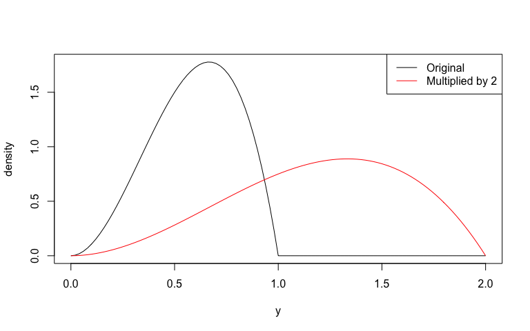

distplyr breathes life into probability distributions by providing a grammar for their modification and reshaping. It works seamlessly with distribution objects from the distionary package, and builds on the probaverse ecosystem for making representative statistical models.
With distplyr, you can manipulate probability distributions using an intuitive grammar of verbs. Apply transformations, combine distributions, and build complex probabilistic models from simple building blocks – all while maintaining mathematical correctness and internal consistency.
The name “distplyr” is inspired by dplyr: while dplyr provides a grammar for manipulating data, distplyr provides a grammar for manipulating distributions.
Statement of Need
Real-world phenomena rarely follow simple textbook distributions. They arise from transformations, combinations, and compositions of simpler processes. The annual maximum flow in a river may be the larger of a snowmelt-related flow and a rainfall-related flow; a distribution of residuals can be moved over a regression equation to obtain a predictive distribution; marginal distributions can be estimated by averaging component distributions; a rainfall total might be a mixture of 70% dry days (zeros) and 30% Gamma-distributed amounts.
While R has excellent support for standard distributions, it lacks a systematic way to transform and combine them. When you need to work with the distribution of a transformed or combined random variable, you’re often left deriving formulas by hand or resorting to simulation. distplyr fills this gap by providing a consistent grammar of verbs for distribution manipulation, built on top of the flexible distionary infrastructure. Define your distributions, apply transformations, and let the package handle the mathematical details.
Target Audience
distplyr is designed for:
- Data scientists and statisticians who need to build custom probability models that go beyond standard parametric families.
- Researchers in fields like environmental science, finance, engineering, and insurance where complex distributions arise from combining and transforming simpler processes.
- Modelers who want to express their domain knowledge through distribution manipulations rather than being constrained by pre-packaged options.
- Students and educators learning about probability distributions, their transformations, and how random variables combine.
- Anyone who wants an intuitive, programmatic way to work with distributions rather than deriving formulas by hand or running simulations.
If you work with probability distributions and find yourself wishing you could “just shift this,” “mix these together,” or “see what happens when I transform this,” then distplyr is for you.
Development Status
distplyr is under active development and, while functional, is still young and will experience growing pains. For example, it currently struggles with manipulating some distributions that aren’t continuous, and warnings or errors are provided in these cases. These limitations will be addressed as development continues. We appreciate your patience and welcome contributions! Please see the contributing guide to get started.
Quick Start
Transform distributions using functions or operators:
# Create a standard Normal distribution
a <- dst_norm(0, 1)
# Transform using functions
shift(a, 10)
#> Normal distribution (continuous)
#> --Parameters--
#> mean sd
#> 10 1
multiply(a, 2)
#> Normal distribution (continuous)
#> --Parameters--
#> mean sd
#> 0 2
# Or use operators
10 + 2 * a
#> Normal distribution (continuous)
#> --Parameters--
#> mean sd
#> 10 2These all simplify to other Normal distributions, but that’s not always the case.
b <- dst_beta(3, 2)
d <- b * 2
d
#> Scaled distribution (continuous)
#> --Parameters--
#> $distribution
#> Beta distribution (continuous)
#> --Parameters--
#> shape1 shape2
#> 3 2
#>
#> $constant
#> [1] 2Visualize this multiplication:
plot(b, to = 2)
plot(d, add = TRUE, col = "red")
legend(
"topright",
legend = c("Original", "Multiplied by 2"),
col = c("black", "red"),
lty = 1
)
Apply mathematical transformations.
log(dst_gamma(4, 2))
#> Logarithmic distribution (continuous)
#> --Parameters--
#> $distribution
#> Gamma distribution (continuous)
#> --Parameters--
#> shape rate
#> 4 2Or combine distributions; in this case, by the maximum.
# Maximum of three sites
site1 <- dst_norm(20, 2)
site2 <- dst_norm(22, 3)
site3 <- 2 * dst_t(3) + 19
regional_max <- maximize(site1, site2, site3)
# Plot these distributions
plot(site1, lty = 2, col = "red", from = 10, to = 30)
plot(site2, add = TRUE, lty = 2, col = "blue")
plot(site3, add = TRUE, lty = 2, col = "green")
plot(regional_max, add = TRUE)
legend(
"topright",
legend = c("Maximum", "Site 1", "Site 2", "Site 3"),
col = c("black", "red", "blue", "green"),
lty = 1
)
Learn More
See vignette("manipulating") for a comprehensive guide to all verbs, including operators (+, -, *, /), math functions (exp(), log(), sqrt()), and understanding when operations simplify to known distributions.
Correctness and Reliability
distplyr employs rigorous testing to ensure mathematical and computational correctness:
Internal Consistency: All distribution properties remain mathematically consistent with each other. For example, the density integrates to the CDF, the mean calculated from the density matches the specified mean, and quantile and CDF functions are proper inverses.
Simplification Correctness: When operations simplify to known distributions (e.g., exp of Normal becomes Log Normal), the package verifies that simplified and non-simplified versions produce equivalent distributions by comparing their CDFs over a fine grid of points. See vignette("manipulating") for details on simplifications.
distplyr in the Context of Other Packages
The R ecosystem offers several packages for working with probability distributions:
statsPackage: Provides functions for standard distributions (rnorm,pnorm, etc.) but lacks tools for transformation and composition.distrPackage: Offers an S4 object-oriented framework for distributions with transformation capabilities, but has a steeper learning curve and complex interface.distributions3Package: Provides an S3-based interface focused on simplicity, suitable for working with standard distributions but limited in transformation capabilities.distributionalPackage: Extendsdistributions3with vectorization support and some transformations, but less flexible for custom operations.
In this landscape, distplyr addresses the need for a systematic approach to distribution manipulation through a grammar-based framework. Built on the flexible distionary infrastructure, operations maintain mathematical correctness through automatic simplifications and can be chained naturally to build arbitrarily complex distributions from simple building blocks. The extensible framework supports adding new transformation verbs and distribution families as needed, making it a key component to the probaverse ecosystem.
Acknowledgements
The creation of distplyr would not have been possible without the support of BGC Engineering Inc., the Politecnico di Milano, the European Space Agency, The University of British Columbia, and the Natural Science and Engineering Research Council of Canada (NSERC). The authors would also like to thank the reviewers from ROpenSci during the review process of the distionary package, as their insightful feedback also helped in the development of distplyr.
Citation
To cite package distplyr in publications use:
Coia V (2025). distplyr: Manipulation of Probability Distributions. R package version 0.2.0, https://github.com/probaverse/distplyr, https://distplyr.probaverse.com/.
Code of Conduct
Please note that the distplyr project is released with a Contributor Code of Conduct. By contributing to this project, you agree to abide by its terms.